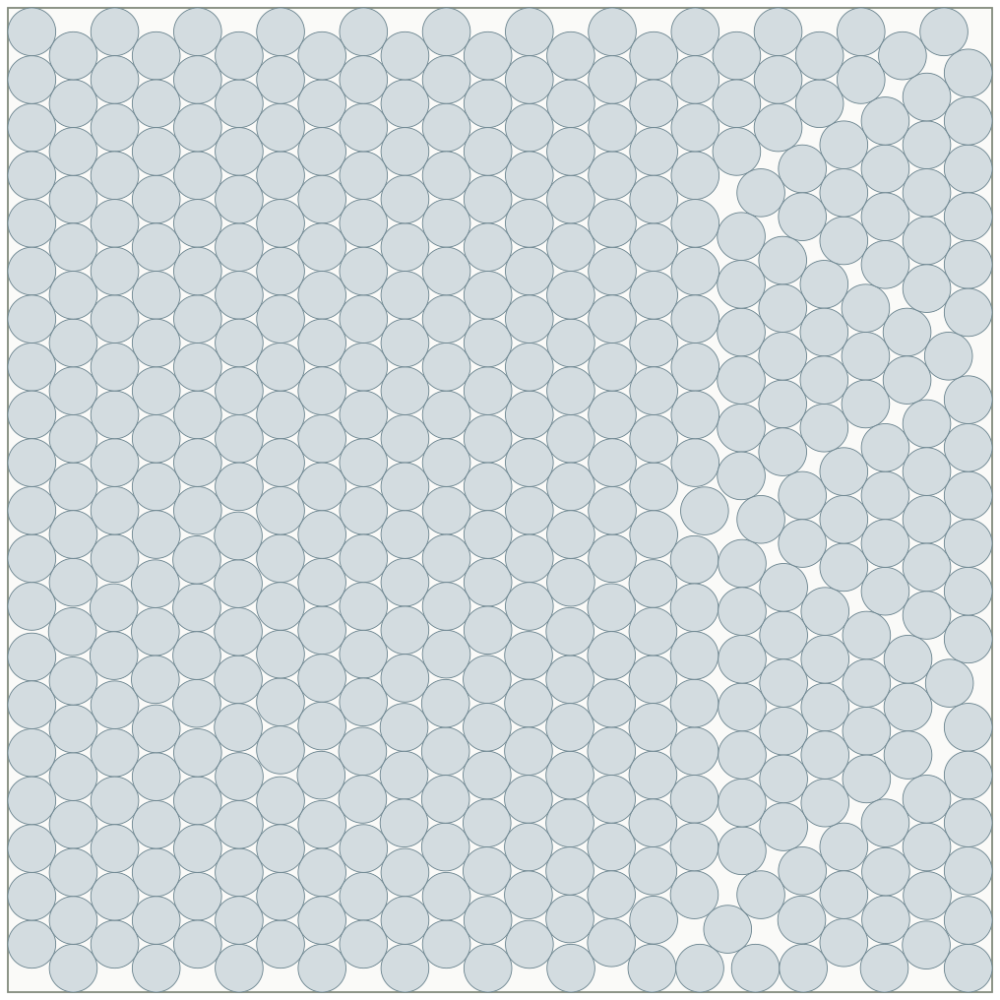

Packing problems
464 circles in a unit square
Equal circles in a unit square; larger radius is better.


This arrangement
0.024320132
Common radius · 8 significant figures
0.0122% larger radius than the radius calculated from the cavity length in Basurto et al. supplement 3 on 21 November 2026.
| Arrangement | Common radius |
|---|---|
| This arrangement | 0.024320132 |
| Basurto et al. supplement 3 | 0.024317162 |
Difference: 2.9704328e-06 larger radius.
The comparison converts the published cavity length from disk diameters to a radius, allowing half a unit in the last printed place.